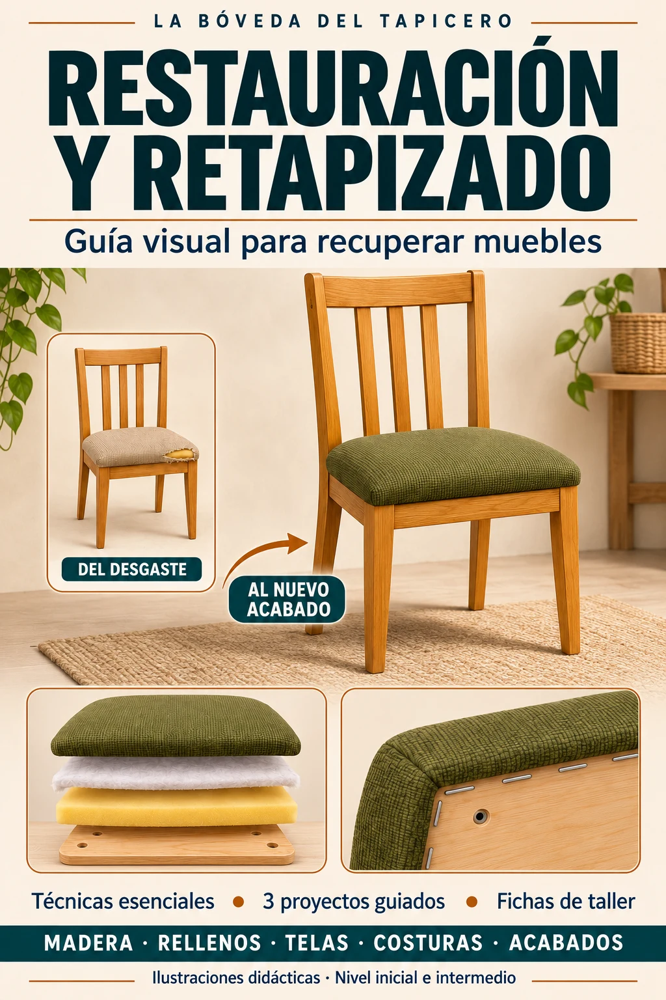
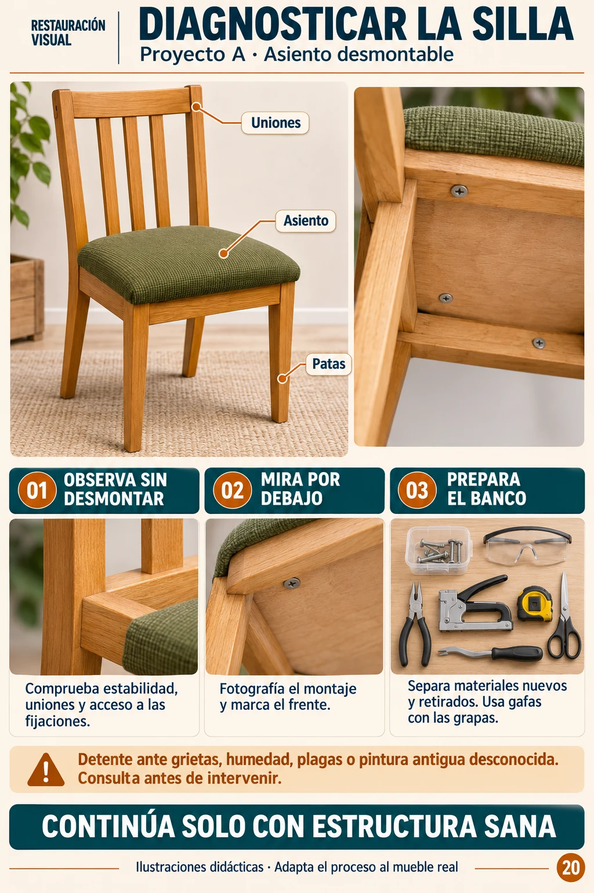
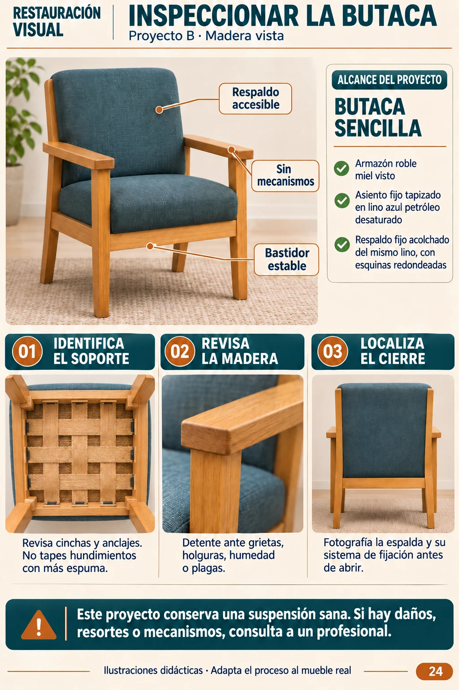
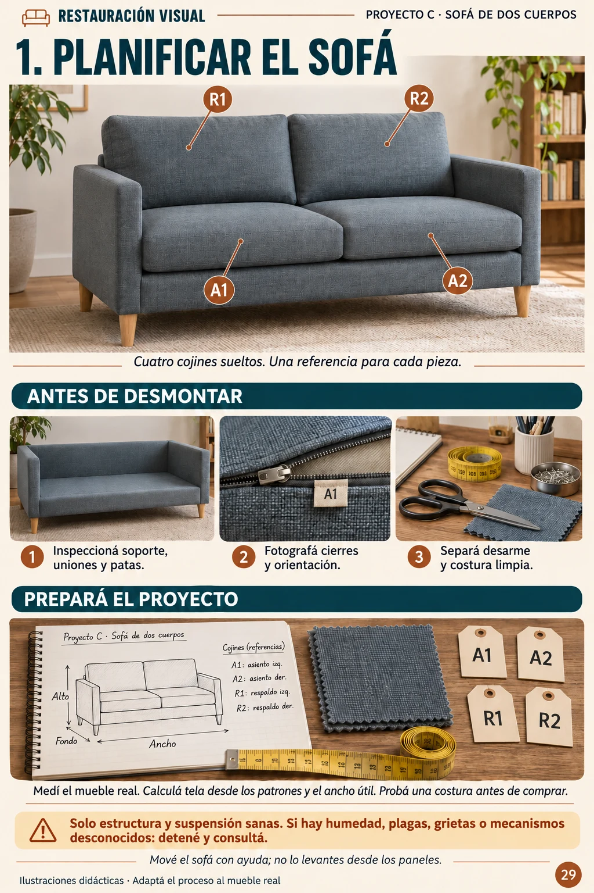

Revisa antes de desmontar
Identifica el estado de la estructura, la base, el relleno y la tela. Reconoce cuándo detenerte y consultar.
Revisa este complemento antes de continuar. Añadirlo es opcional.
ANTES DE CONTINUAR, REVISA ESTA OPCIÓN
Si el precio de la primera oferta te hizo dudar, aquí tienes una segunda opción para sumar la guía completa. Conserva una referencia visual para cuando llegue ese mueble que quieres recuperar.

Identifica el estado de la estructura, la base, el relleno y la tela. Reconoce cuándo detenerte y consultar.
Consulta las secuencias de desmontaje, patrones, corte, costura, tensado y fijación según la pieza.
Apóyate en las fichas para detectar defectos, organizar el trabajo y anotar medidas y materiales.
Páginas reales de la guía, completas y sin recortes.



OPCIÓN ALTERNATIVA · GUÍA COMPLETA
Conservas las 40 páginas, los tres proyectos guiados y las fichas de taller. El contenido no cambia.
Oferta anterior: US$14.99
US$9.99
Precio en dólares estadounidenses (USD).
Los botones de esta oferta se cargan mediante Hotmart dentro del recorrido de compra.
Complemento opcional, vendido por separado.
Tu compra principal no depende de añadir esta guía.
Una guía digital en PDF de 40 páginas, con técnicas ilustradas, tres proyectos guiados y tres fichas de taller para completar. No incluye muebles, herramientas ni materiales físicos.
El enfoque es recuperar muebles existentes: evaluar su estado, preparar el trabajo y consultar técnicas de restauración y retapizado. Complementa la colección de proyectos de La Bóveda.
La guía se dirige a trabajos de alcance inicial e intermedio y utiliza ilustraciones didácticas. No sustituye una evaluación profesional ni certifica la resistencia del mueble. Ante grietas portantes, moho, plagas, pintura antigua desconocida o mecanismos, detén el trabajo y consulta.